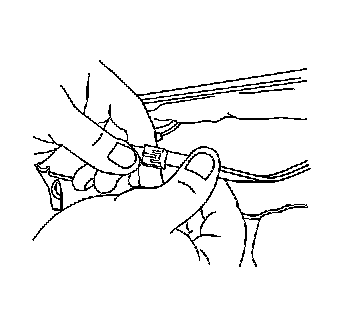
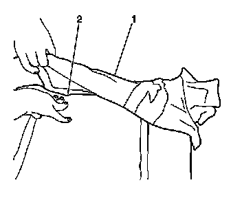

Front Seat Back Cushion Cover and Cushion Pad Replacement
Front Seat Back Cushion Cover and Cushion Pad Replacement
Removal Procedure
Caution: Refer to SIR Caution (SIR Caution) .
1. Remove the seat back trim. Refer to Front Seat Back Trim Replacement (Front Seat Back Trim Replacement) .
2. Remove the head restraint. Refer to Front Seat Head Restraint Replacement (Front Seat Head Restraint Replacement) .
3. Remove the head restraint retainers. Refer to Front Seat Head Restraint Retainer Replacement (Front Seat Head Restraint Retainer Replacement) .
4. Remove the inflatable restraint side impact module. Refer to Inflatable Restraint Side Impact Module Replacement - Front (Service and Repair) .

5. Disconnect the heated seat electrical connector to the seat back.
6. Remove all of the seat back cover J channels retaining the seat back cover and pad to the seat back frame.

7. Remove the seat cover (1) and cushion (2) from the seat back frame.
8. Remove the seat back cover (1) from the seat back cushion (2).
Installation Procedure
1. Install the seat back cover (1) to the seat back cushion (2).
2. Position the seat back cover and pad (1, 2) to the seat back frame.
3. Install the J channels to seat back frame.
4. Connect the heated seat electrical connectors.
5. Install the inflatable restraint side impact module. Refer to Inflatable Restraint Side Impact Module Replacement - Front (Service and Repair) .
6. Install the head restraint retainers. Refer to Front Seat Head Restraint Retainer Replacement (Front Seat Head Restraint Retainer Replacement) .
7. Install the head restraint. Refer to Front Seat Head Restraint Replacement (Front Seat Head Restraint Replacement) .
8. Install the seat back trim. Refer to Front Seat Back Trim Replacement (Front Seat Back Trim Replacement) .